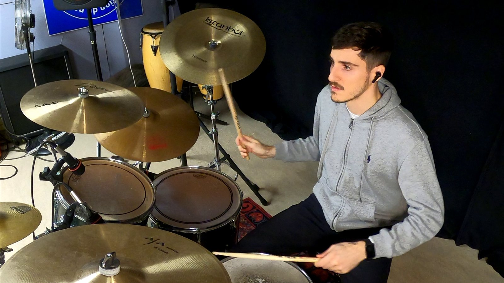

MusicMusica
I play the drums. On my YouTube channel, Fradrum, I post drum covers, some of them with sheet music, and the occasional bass video.
Suono la batteria. Sul mio canale YouTube, Fradrum, pubblico cover di batteria, alcune con lo spartito, e ogni tanto qualche video al basso.